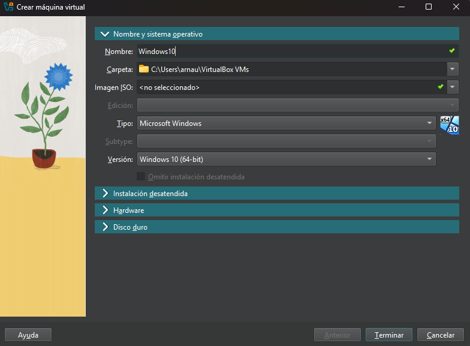

Sprint 5¶
Configuració incial de les MV¶
Aquestes son les configuracions que farem servir en totes dos MV per a la següent pràctica.
Nom, ruta , i sistema operatiu de les màquines.

Aquests seràn els recursos del sistema que utilitzaràn les MV.

Per últim, seleccionem l’espai de disc de cada màquina.

Instal·lació del client Windows 10¶
Un cop creada la Màquina, aquesta en demanarà un dvd, per al qual haurem d’utilitzar una miatge ISO de Windows 10 (nosaltres utilitzarem Windows 10 Enterprise)

Arribarem a la configuració d’instal·lació.


Seleccionarem la instal·lació Personalitzada.

Al menú següent podrem seleccionar el disc on instal·lar Windows així com fer les particions que vulguem.

Seleccionarem l’opció “Nuevo” per fer una nova partició amb el 50% (la meitat) de l’espai del disc.


Automàticament sen’s crearà una unitat on s’instal·laràn alguns fitxers essencials per al sistema.

Per últim seleccionem el disc on instal·larem el disc on instal·lar el OS.


Quan acabe l’instal·lació, haurem d’escollir varies opcions d’idioma per sistema i teclat fins arribar aquí:

Escollirem l’opció “Unirse a un dominio” que ens servirà per crear un usuari local sense necessitat de registrar un compte.

Seguidament escollirem contrasenya i acabarem l’instal·lació.

Punts de Restauració¶
Els punts de restauració permeten guardar diversos “estats” del sistema en el temps per tal de tornar enrere (o endavant).
Normalment s’utilitzen quan algun component essencial del sistema está malmès i aquest no funciona bé.
Per crear-ne un, primer haurem d’activar-los. podem utilitzar el buscador de windows per trobar la finestra:

Un cop aplicat el canvi, seleccionarem “Crear…” per crear-ne un.


Ara ja tenim el Punt de Restauració creat, però i si volem tornar a aquest punt? farem la prova amb Chrome instal·lat.

Es senzill, al menú anterior seleccionem l’opció “Restaurar sistema…”


Seleccionem el punt al que vulguem tornar.


El sistema s’haurà de reiniciar per acabar.


Un cop acabada la restauració, veiem com ja no tenim Chrome instal·lat.

Instal·lar Programes¶
En Windows, instal·lar un programa és molt senzill, farem la prova amb Google Chrome:
Busquem l’instal·lador a la pàgina oficial de Chrome i el descarreguem.

Executem l’instal·lador, que serà un “fitxer.exe”, el qual en cosa d’uns segons completarà l’instal·lació per nosaltes.

Finalment, ja tenim Chrome instal·lat al dispositiu.

Instal·lació del Windows Server¶
Quan s’instal·la el server els passos a seguir con els mateixos que amb el client. Només haurem de canviar la imatge ISO per a la qual utilitzarem la de Windows Server 2022.


També haurem de seleccionar l’opció següent per utilitzar el server amb una interfície gràfica, cosa que ens ho farà molt més senzill.


Ara, haurem d’escollir una contrasenya per a l’administrador amb que iniciarem sessió.

I, finalment, ja podem accedir el servidor.

Configurar la IP¶
Per configurar les connexions necessàries, ens dirigirem al Tauler de control o “Panel de control” > “Redes e Internet” > Centro de redes y recursos compartidos.

Escollirem l’opció “Cambiar configuración del adaptador”.

Seleccionarem l’adaptador que vulguem i navegarem fins a les seves propietats.

Aquí seleccionarem l’opció “Protocolo de Internet versión 4 (TCP/IPv4)” i clickarem a “Propiedades”, on establirem l’IP necessària per fer la connexió.